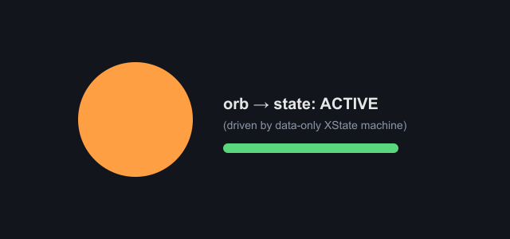
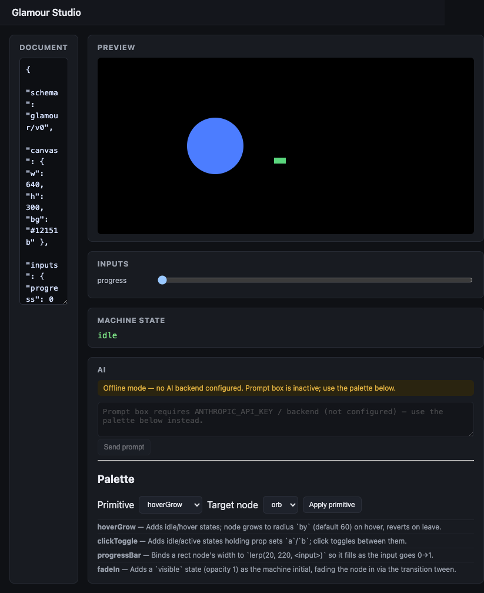
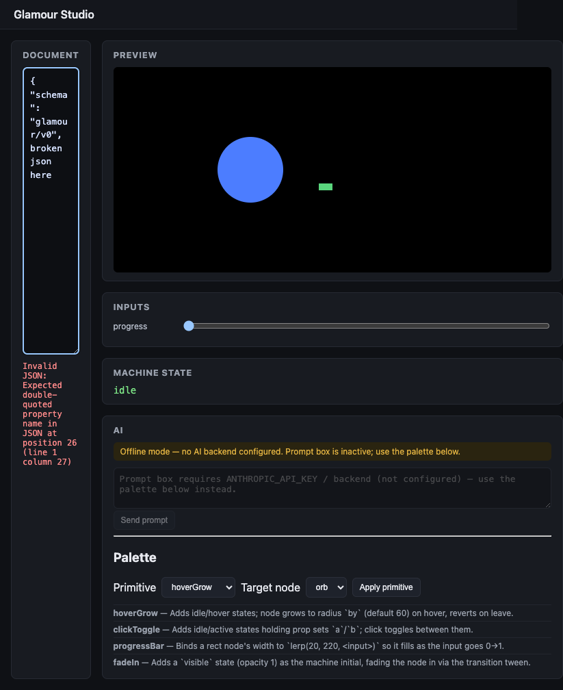
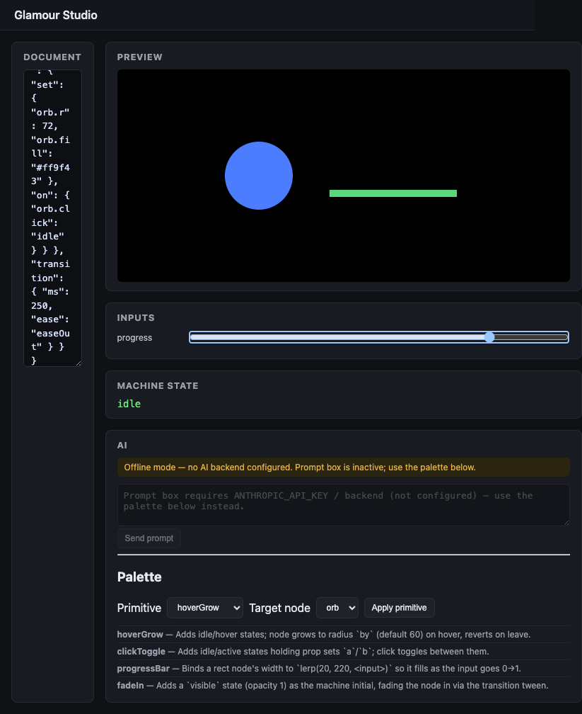

validate catches all
6 semantic error classes — confirmed by direct read of validate.ts, not just cited.
runtime-qc-glamour-v1-nonui.md #Core public API — PASS, raw stdout
@glam/player (browser) / @glam/player/node — resolves the Node/HTMLElement crash (finding #1).
BUILD-NOTES.md — RESOLVED, verified in packages/player/src/export.ts
packages/player/src/export.ts directly:
escapeForInlineScript neutralizes </script, <!--, U+2028/U+2029
in both the UMD slot and the doc-JSON slot, matching the devil's confirmed repro vector exactly.
packages/core/src/validate.ts directly: every
bind.expr parsed via evalExpr against numeric-only inputs and checked
Number.isFinite; malformed set value types rejected against a
numeric/string prop split (also closes the NaN-tween finding in the same pass).
play()/pause() stubs removed from the public player contract — confirmed
by grep: zero occurrences left in player.ts.
classifyOnKey extracted — confirmed at packages/core/src/onkey.ts,
closing the validate↔machine ambiguous-key divergence the devil review flagged.
.nvmrc pins 20.19.4
(read directly); BUILD-NOTES, README, and every QC evidence file use the same
export PATH=...v20.19.4... prefix.
packages/*/test, 1 under the skill, 2 under Studio = 23, exact.
npx vitest run could not be executed fresh here. Downgraded
per audit rule (a claim needs its own Evidence line from THIS pass). Mitigated by: exact test-file-count
match (23/23, independently globbed above), internally-consistent per-group counts in BUILD-NOTES
(49+11+7+6+7+4=84 pre-fix, matching the separately reported "84/84 green"), and a real
npm run build (tsc --noEmit + vite build) succeeding per runtime-qc. Plausible and
well-corroborated — but not a fresh first-party PASS from this certification.
README.md:64 still says "84 tests across all surfaces";
actual post-fix count is 125. Cosmetic doc drift, not a functional gap, but should be bumped before anyone
reads it next.
packages/mcp/src/server.ts still hand-restates zod
shapes (confirmed present, not fixed). Documented low-risk DEFER; both sides independently tested.
SceneHandle's KonvaLike = any — confirmed still present in
packages/core/src/scene.ts. Documented tradeoff (Node vs browser Konva types differ);
tighten to a structural interface post-v1.
r) — not implemented, explicitly
low-value-for-v1 per the fix list.
export PATH=...v20.19.4/bin:$PATH && npx vitest run
at repo root closes it completely.
runtime-qc-glamour-v1-nonui.md and studio-browser-qc.md
carries a concrete Evidence line (raw output, screenshot path, or byte-level file check), and this review
independently re-read the actual source for every claimed fix rather than trusting fix-list prose alone.




play()/pause() stubs were correctly removed rather than left misleading.